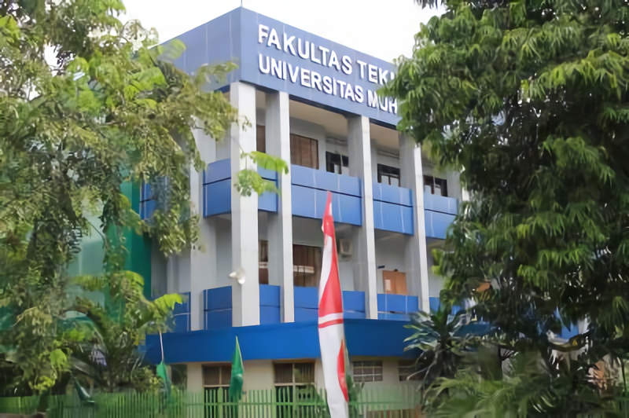
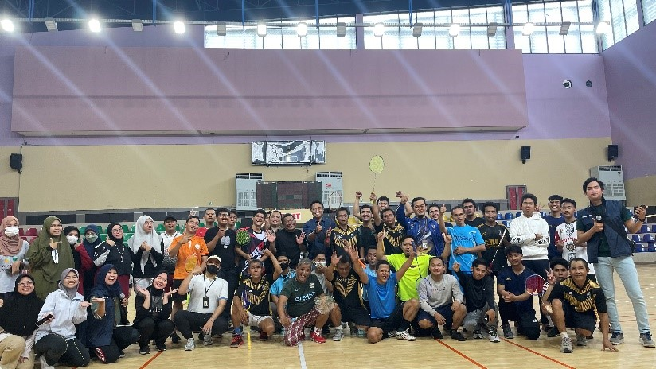
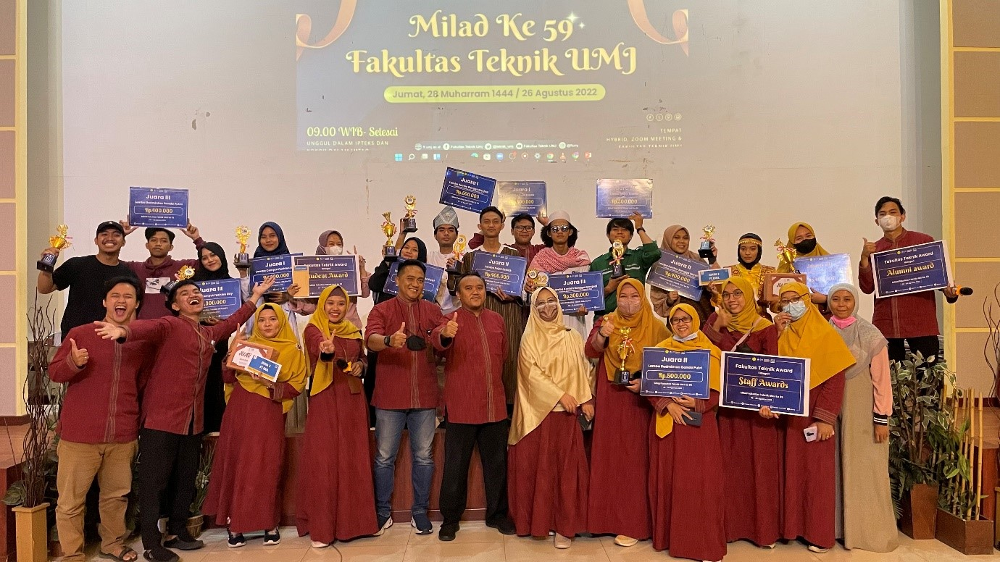

Tentang Kami

Universitas Muhammadiyah Jakarta merupakan Universitas Muhammadiyah tertua di Indonesia. Saat ini Universitas Muhammadiyah Jakarta memiliki 2 kampus yaitu kampus A yang berada di Cirendeu, Tanggerang Selatan dan kampus B yang berada di Cempaka Putih, Jakarta Pusat. Fakultas Teknik merupakan salah satu dari 10 Fakultas yang ada di Universitas Muhammadiyah Jakarta, yang merupakan salah satu fakultas yang ada di kampus B. Fakultas ke-4 ini didirikan pada tahun 1963 setelah beberapa fakultas lainnya. Saat ini di fakultas Teknik sendiri memiliki 9 Program Studi di antaranya 7 program studi Strata satu (S1) yaitu Teknik Sipil, Teknik Elektro, Teknik Kimia, Teknik Mesin, Teknik Industri, Teknik Arsitektur, Teknik Informatika. 1 Program studi D3 yaitu OAB (Otomotif dan Alat Berat) dan satu program studi strata dua (S2) yaitu Magister Teknik Kimia.
Baca Selengkapnya
Visi
Menjadi Fakultas Teknik yang terkemuka, Modern, dan Islami pada tingkat nasional dalam mencetak Sarjana Teknik yang professional,
berakhlak mulia dan berjiwa wirausaha pada tahun 2025
Misi
Fakultas Teknik UMJ dalam rangka mewujudkan visi, dijabarkan dalam misi sebagai berikut:
1. Menyelenggarakan proses pembelajaran yang memiliki keunggulan dibidang Ilmu Teknik.
2. Menyelenggarakan penelitian yang inovatif dan pengabdian masyarakat yang dapat meningkatkan kesejahteraan manusia.
3. Mengembangkan sumber daya manusia (dosen dan tenaga kependidikan) yang berkualitas.
4. Menjalin kerjasama yang produktif dan berkelanjutan dengan lembaga pendidikan, pemerintah dan dunia industri.
5. Menyelenggarakan pembinaan civitas akademika dalam kehidupan Islami
6. Menanamkan sikap profesionalisme dan etos kewirausahaan
Fasilitas FT-UMJ
Fakultas Teknik UMJ memiliki beberapa fasilitas yaitu ruangan Laboratoriuum yang mana masing - masing program studi memiliki 2 ruangan laboratorium, kelas yang memadai di lengkapi dengan proyektor serta dan ber- AC, WIFI yang berada di setiap sudut ruangan yang mana passwordnya yaitu NIM dari masing - masing mahasiswa, Perpustakaan, ruangan fitnes dan ruangan masing - masing UKM yang ada di FT-UMJ
|
SEGENAP CIVITAS AKADEMIKA FT UMJ RAYAKAN MILAD KE 59

Foto Bersama Pembukaan Lomba Pertama Semarak Milad FTUMJ yang ke 59. pada Rabu, 10 Agustus 2022
Lihat Selengkapnya
PEMENANG LOMBA MILAD FT UMJ KE 59

Foto Bersama Pemenang Lomba Lomba Semarak Milad Fakultas Teknik UMJ yang ke 59. pada Jumat, 26 Agustus 2022.
Lihat Selengkapnya
Penerimaan Mahasiswa Baru